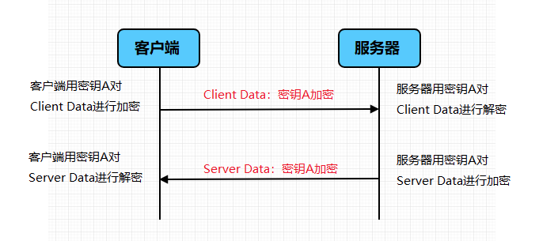
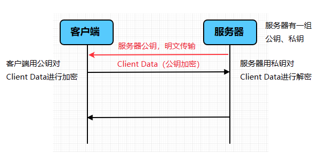

我奶奶都懂HTTPS
HTTPS 概述
HTTPS（全称：Hyper Text Transfer Protocol over Secure Socket Layer 或 Hypertext Transfer Protocol Secure，超文本传输安全协议），是以安全为目标的HTTP通道，简单讲是HTTP的安全版。
就是在 HTTP 之下加进去了 SSL ，HTTPS 的安全基础就是 SSL 。 因此加密的详细内容就需要SSL
HTTPS: URL表明它使用了HTTP，但HTTPS存在不同于HTTP的默认端口及一个加密/身份验证层（在HTTP与TCP之间）。
HTTP默认采用80作为通讯端口，对于传输采用不加密的方式；HTTPS默认采用443，对于传输的数据进行加密传输。目前主流的网站基本上开始默认采用HTTPS作为通信方式。
对称加密
对称加密算法的加密和解密都是用同一个密钥。
如果通信双方都各自持有同一个密钥，且没有别人知道，则两方的通信安全是可以被保证的（除非密钥被破解）。
然而，最大的问题就是这个密钥怎么让传输的双方知晓，同时不被别人知道。如果由服务器生成一个密钥并传输给浏览器，这个传输过程中密钥被别人劫持，之后他就能用密钥解开双方传输的任何内容。
如果浏览器内部预存了网站A的密钥，且可以确保除了浏览器和网站A，不会有任何外人知道该密钥，那理论上用对称加密是可以的。这样，浏览器只要预存好世界上所有HTTPS网站的密钥就可以了。显然，这样做是不现实的。
怎么办？解决这个问题，我们就需要非对称加密。

非对称加密
非对称加密算法需要一组密钥对，分别是公钥和私钥，这两个密钥是成对出现的。
公钥加密的内容需要对应的私钥解密，私钥加密的内容需要对应的公钥解密。私钥由服务器自己保存，公钥发送给客户端。
客户端拿到公钥后可以对请求进行加密后发送给服务端，这时候就算中间被截获，没有私钥也无法解密发送的内容，这样确保了客户端发送到服务端数据的安全。

非对称加密改良
通过一组公钥私钥，已经可以保证单个方向传输的安全性，那用两组公钥私钥，是不是就能保证双向传输都安全了？请看下面的过程：
- 某网站拥有用于非对称加密的公钥A1、私钥A2；浏览器拥有用于非对称加密的公钥B1、私钥B2。
- 浏览器向网站服务器请求，服务器把公钥A1明文传输给浏览器。
- 浏览器把公钥B1明文传输给服务器。
- 之后浏览器向服务器传输的所有东西都用公钥A1加密，服务器收到后用私钥A2解密。由于只有服务器拥有私钥A2进行解密，所以能保证这条数据的安全。
- 服务器向浏览器传输的所有东西都用公钥B1加密，浏览器收到后用私钥B2解密。同上也可以保证这条数据的安全。
可见确实可行。抛开这里面仍有的漏洞不谈（下文会讲），HTTPS的加密却没使用这种方案，为什么？最主要的原因是非对称加密算法非常耗时，特别是加密解密一些较大数据的时候有些力不从心。而对称加密快很多。那我们能不能运用非对称加密的特性解决前面提到的对称加密的问题？
非对称加密 + 对称加密
既然非对称加密耗时，我们考虑是否可以采用非对称加密+对称加密结合的方式，而且要尽量减少非对称加密的次数。
非对称加密、解密各只需一次的方法：
- 某网站拥有用于非对称加密的公钥A1、私钥A2。
- 浏览器向网站服务器请求，服务器把公钥A1明文给传输浏览器。
- 浏览器随机生成一个用于对称加密的密钥X，用公钥A1加密后传给服务器。
- 服务器拿到后用私钥A2解密得到密钥X。
- 这样双方就都拥有密钥X了，且别人无法知道它。之后双方所有数据都用密钥X加密解密即可。
HTTPS基本就是采用了这种方案。但还是有漏洞的。
中间人攻击
中间人的确无法得到浏览器生成的对称密钥X，这个密钥本身被公钥A1加密，只有服务器才能用私钥A2进行解密。然而中间人却完全不需要拿到私钥A2就能劫持信息，请看：
- 某网站拥有用于非对称加密的公钥A1、私钥A2。
- 浏览器向网站服务器请求，服务器把公钥A1明文传输给浏览器。
- 中间人劫持到公钥A1，保存下来，把数据包中的公钥A1替换成自己伪造的公钥B1（它当然也拥有公钥B1对应的私钥B2）。
- 浏览器随机生成一个用于对称加密的密钥X，用公钥B1（浏览器不知道公钥被替换了）加密后传给服务器。
- 中间人劫持后用私钥B2解密得到密钥X，再用公钥A1加密后传给服务器。
- 服务器拿到后用私钥A2解密得到密钥X。
这样在双方都不会发现异常的情况下，中间人得到了对称密钥X。根本原因是浏览器无法确认自己收到的公钥是不是网站自己的。那么下一步就是解决这个问题：如何证明浏览器收到的公钥一定是该网站的公钥？
数字证书
现实生活中，如果想证明某身份证号一定是小明的，怎么办？看身份证。这里政府机构起到了“公信”的作用，身份证是由它颁发的，它本身的权威可以对一个人的身份信息作出证明。互联网中也有这么一个公信机构，CA 机构。
网站在使用HTTPS前，需要向“CA机构”申请颁发一数字证书，数字证书里有证书持有者、证书持有者的公钥等信息。服务器把证书传输给浏览器，浏览器从证书里取公钥就可以了。然而这里又有一个显而易见的问题：证书本身的传输过程中，如何防止被篡改？即如何证明证书本身的真实性？数字证书怎么防伪呢？
服务器提交自己的基本信息想CA机构提出申请，CA机构在给服务器颁发证书的时候，会连同数字证书以及根据证书计算的摘要一同发送给服务器，且这个摘要是需要经过CA机构自己的私钥进行加密的。申请流程如下：
数字签名
我们把证书内容生成一份“签名”，比对证书内容和签名是否一致就能察觉是否被篡改。这种技术就叫数字签名。
下图中左侧是数字签名的制作过程，右侧是验证过程

数字签名的制作过程：
- CA拥有非对称加密的私钥和公钥。
- CA对证书明文信息进行hash。
- 对hash后的值用私钥加密，得到数字签名。
明文和数字签名共同组成了数字证书，这样一份数字证书就可以颁发给网站了。
那浏览器拿到服务器传来的数字证书后，如何验证它是不是真的？（有没有被篡改、掉包）
浏览器验证过程：
- 拿到证书，得到明文T1，数字签名S1。
- 用CA机构的公钥对S1解密（由于是浏览器信任的机构，所以浏览器保有它的公钥。详情见下文），得到S2。
- 用证书里说明的hash算法对明文T1进行hash得到T2。
- 比较S2是否等于T2，等于则表明证书可信。
这里需要注意一点，一个是CA的公钥，内置在客户端，用来解密数字签名！另一个是目标服务器的公钥，在数字证书内容里，用来协商对称密钥！
为什么这样可以证明证书可信？
假设中间人篡改了证书的原文，由于他没有CA机构的私钥，所以无法得到此时加密后签名，无法相应地篡改签名。浏览器收到该证书后会发现原文和签名解密后的值不一致，则说明证书已被篡改，证书不可信，从而终止向服务器传输信息，防止信息泄露给中间人。
既然不可能篡改，那如果整个证书被掉包呢？
假设有另一个网站B也拿到了CA机构认证的证书，它想搞垮网站A，想劫持网站A的信息。于是它成为中间人拦截到了A传给浏览器的证书，然后替换成自己的证书，传给浏览器，之后浏览器就会错误地拿到B的证书里的公钥了，会导致上文提到的漏洞。
其实这并不会发生，因为证书里包含了网站A的信息，包括域名，浏览器把证书里的域名与自己请求的域名比对一下就知道有没有被掉包了。
制作数字签名时为什么需要hash一次？
最显然的是性能问题，前面我们已经说了非对称加密效率较差，证书信息一般较长，比较耗时。而hash后得到的是固定长度的信息（比如用md5算法hash后可以得到固定的128位的值），这样加密解密就会快很多。当然除此之外也有安全上的原因。
HTTPS必须在每次请求中都要先在SSL/TLS层进行握手传输密钥吗？
显然每次请求都经历一次密钥传输过程非常耗时，那怎么达到只传输一次呢？用session就可以。
服务器会为每个浏览器（或客户端软件）维护一个session ID，在TSL握手阶段传给浏览器，浏览器生成好密钥传给服务器后，服务器会把该密钥存到相应的session ID下，之后浏览器每次请求都会携带session ID，服务器会根据session ID找到相应的密钥并进行解密加密操作，这样就不必要每次重新制作、传输密钥了
HTTPS 工作原理
- client向server发送请求https://baidu.com，然后连接到server的443端口。
- 服务端必须要有一套数字证书，可以自己制作，也可以向组织申请。区别就是自己颁发的证书需要客户端验证通过，才可以继续访问，而使用受信任的公司申请的证书则不会弹出提示页面，这套证书其实就是一对公钥和私钥。
- 传送证书
这个证书其实就是公钥，只是包含了很多信息，如证书的颁发机构，过期时间、服务端的公钥，第三方证书认证机构(CA)的签名，服务端的域名信息等内容。 - 客户端解析证书
这部分工作是由客户端的TLS来完成的，首先会验证公钥是否有效，比如颁发机构，过期时间等等，如果发现异常，则会弹出一个警告框，提示证书存在问题。如果证书没有问题，那么就生成一个随机值（密钥）。然后用证书对该随机值进行加密。 - 传送加密信息
这部分传送的是用证书加密后的密钥（随机值），目的就是让服务端得到这个密钥（随机值），以后客户端和服务端的通信就可以通过这个随机值来进行加密解密了。 - 服务端加密信息
服务端用私钥解密，得到了客户端传过来的密钥（随机值），然后把内容通过该值进行对称加密。 - 传输加密后的信息
这部分信息是服务端用密钥（随机值）对称加密后的信息，可以在客户端被还原。 - 客户端解密信息
客户端用之前生成的密钥（随机值）解密服务端传过来的信息，于是获取了解密后的内容。
自签名证书 和 SpringBoot单双向认证配置及测试
下载和安装OpenSSL
下载其他人做的便捷版安装包 http://slproweb.com/products/Win32OpenSSL.html
配置环境变量
配置环境变量，老生常谈，这里简单贴一下配置OPENSSL_HOME
测试命令：
1 | openssl version |
生成根证书私钥
1 | openssl genrsa -aes256 -out private/cakey.pem 1024 |
生成证书请求（ca.csr)
1 | openssl req -new -key private/cakey.pem -out private/ca.csr -subj “/C=CN/ST=ZHEJIANG/L=HANGZHOU/O=TEST/OU=mygroup/CN=TEST” |
检查证书请求信息
1 | openssl req -text -in ca.csr -noout |
自签发根证书
1 | openssl x509 -req -days 365 -sha1 -extensions v3_ca -signkey private/cakey.pem -in private/ca.csr -out certs/ca.cer |
其他操作： https://www.cxyzjd.com/article/skytering/103247128
SpringBoot配置文件：
1 | server.port=443 |
测试：

1、如果客户端想验证服务端证书，客户端需要安装服务端的公钥文件(cer)(或者服务端证书是官方CA颁发的，客户端可以直接联网认证)，因为服务端会将自己的随机数等信息使用自己的私钥加密之后发给客户端，而客户端要想解开这些数据，必须持有服务端的公钥才可以，之后服务端验证通过。
2、服务端想验证客户端证书，则需要将客户端的证书的公钥文件放到服务端trustStore信任库中，当客户端请求访问服务端时，会使用自己的私钥加密随机数、ssl版本等信息发送给服务端，服务端只有持有客户端的公钥才能解开这些数据，验证才能通过。

相关概念：
1.kestore(密钥库)和truststore(信任库)的区别：
Keystore，用来存放服务端证书，可以看成一个放key的库，key就是公钥，私钥，数字签名等组成的一个信息。
Truststore是放服务端信任的客户端证书的一个store，里存放的是只包含公钥的数字证书，代表了可以信任的客户端证书， 而keystore是包含私钥的。
2.证书文件 – cer文件和pfx文件的区别 https://www.cnblogs.com/lthxk-yl/archive/2013/06/03/3115273.html
作为文件形式存在的证书一般有这几种格式：
1)、带有私钥的证书
由Public Key Cryptography Standards #12，PKCS#12标准定义，包含了公钥和私钥的二进制格式的证书形式，以pfx作 为证书文件后缀名。
2)、二进制编码的证书
证书中没有私钥，只包含公钥，DER 编码二进制格式的证书文件，以cer作为证书文件后缀名。
3)、Base64编码的证书
证书中没有私钥，只包含公钥，BASE64 编码格式的证书文件，也是以cer作为证书文件后缀名。